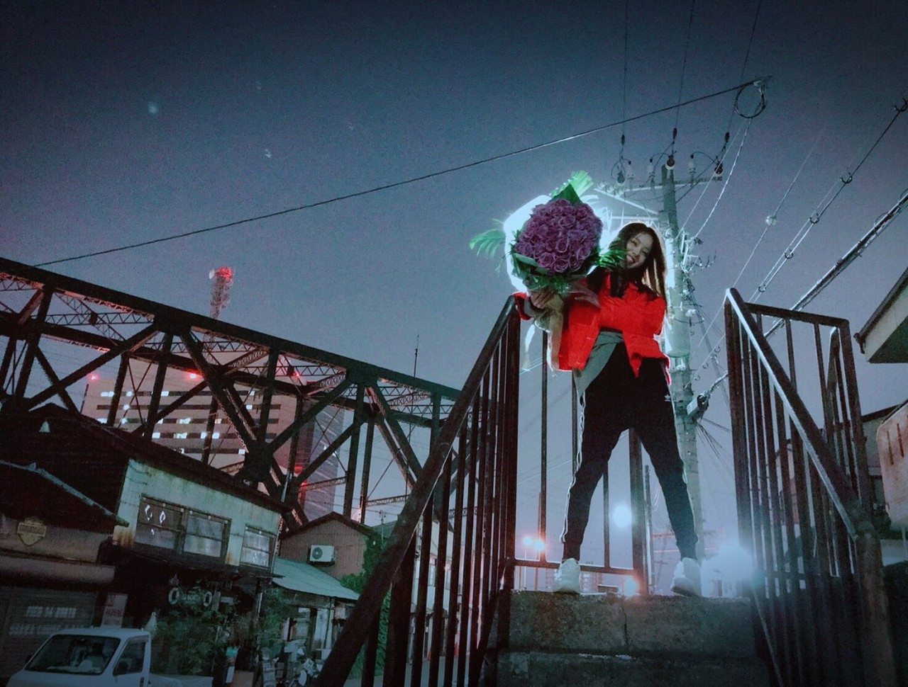
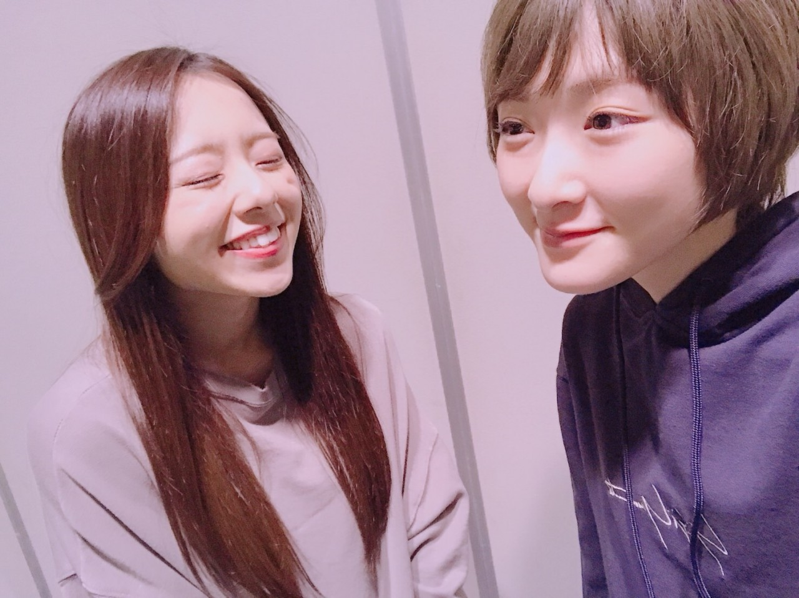
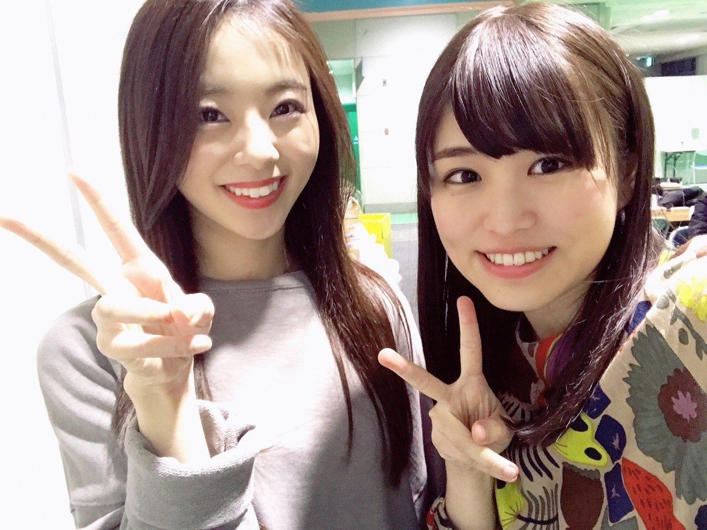
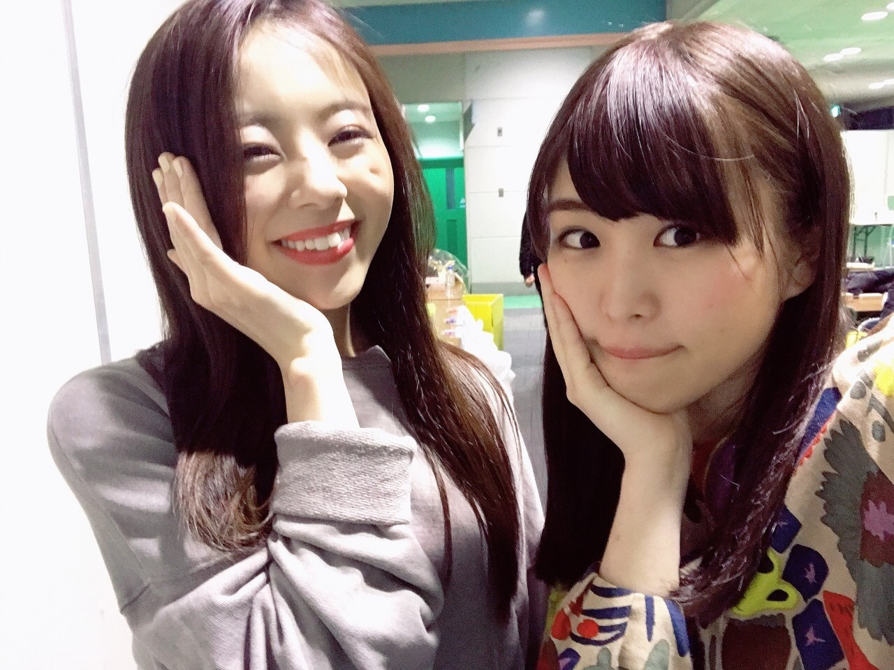
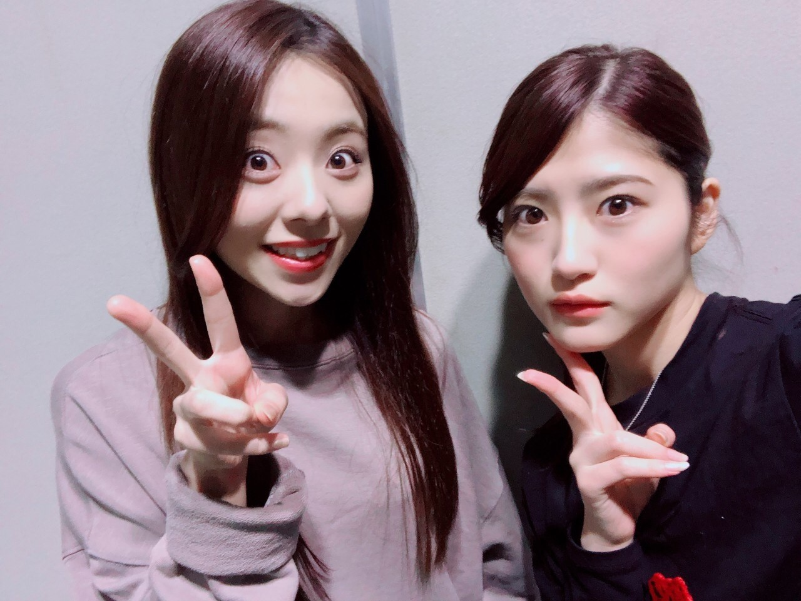
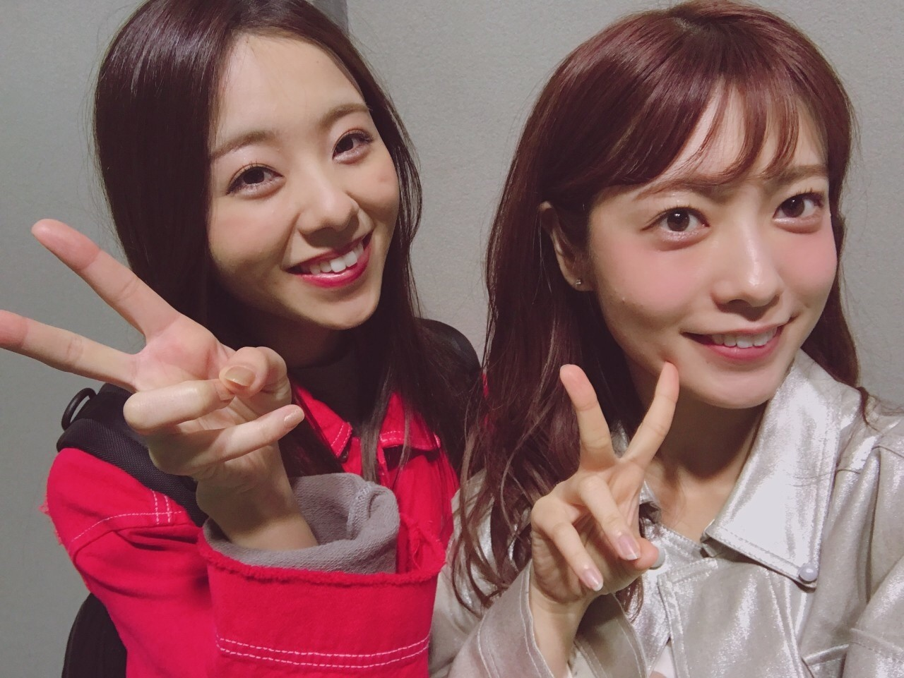
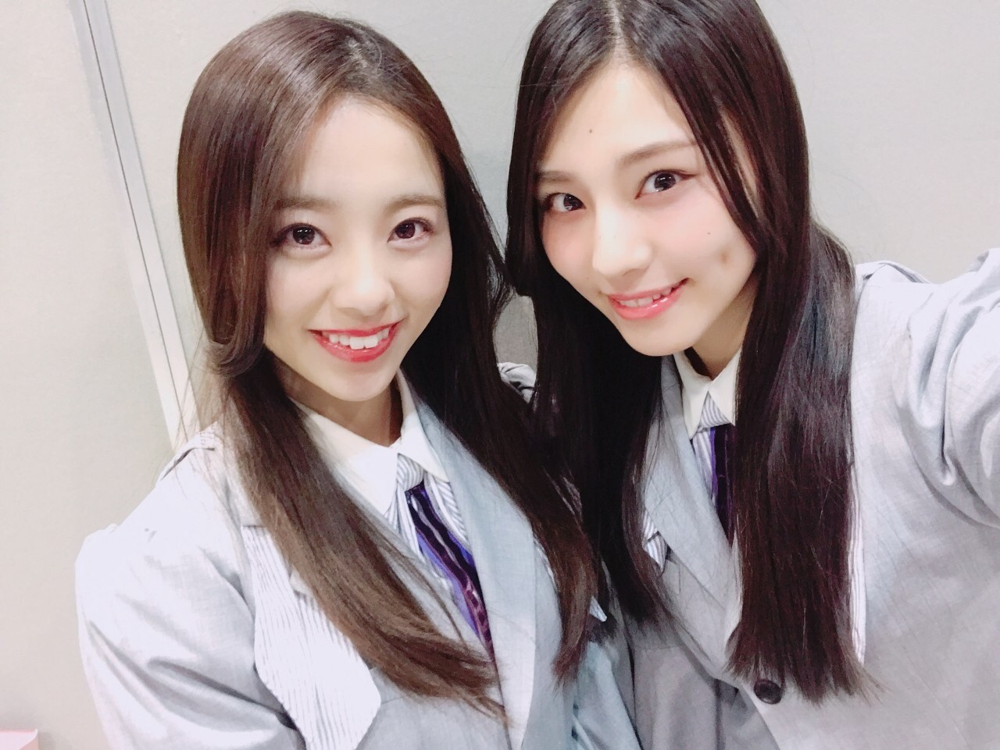
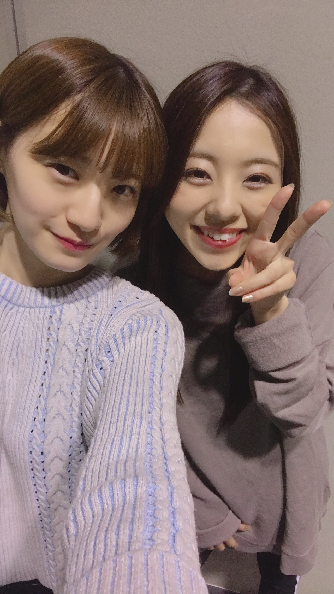
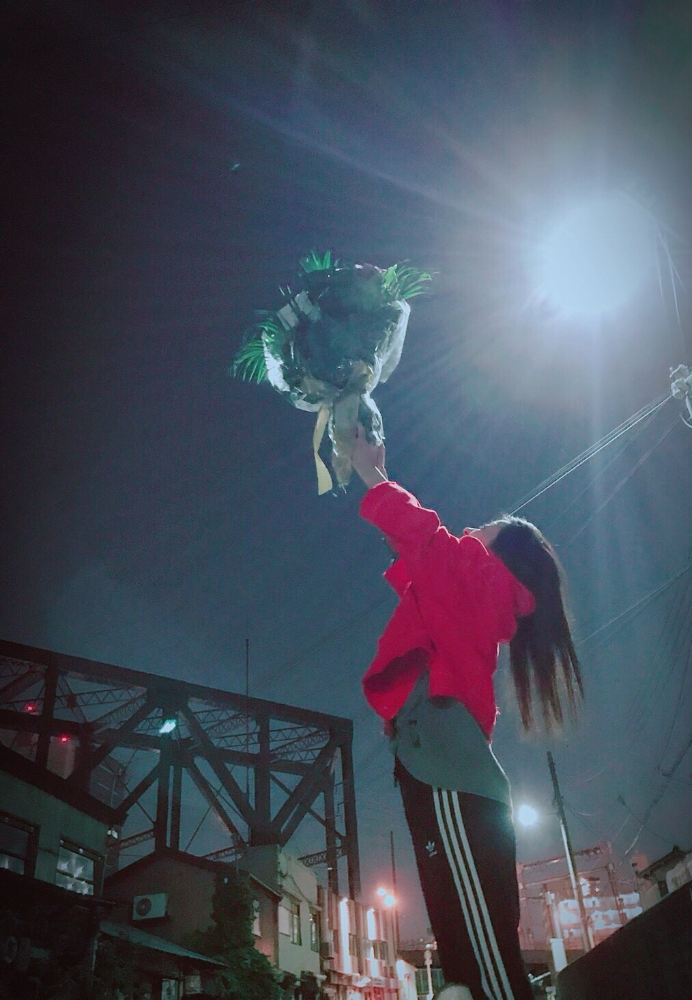

| 2018/04 29 Sun | 川村真洋 皆様お久しぶりです！～Rotty～Twitter Instagram アメブロ |
こんにちわ！
遅くなってしまいました！
私、川村真洋は、3月31日の握手会をもって、乃木坂46を卒業致しました。

卒業の日、ファンの皆様から頂いた薔薇本当に素敵でした。ありがとうございました‼︎
この写真は、卒業直後に地元で姉が撮ってくれた写真です。
最後に撮ったメンバーとの写真。







7年間、乃木坂46に携わって下さったスタッフの皆様、メンバー、ファンの皆様、本当に今までありがとうございました。
Live前の「1.2.3.4.Go Rotty」の声援には、沢山のパワーを頂きました。私の宝物です‼︎
卒業当日の握手会、、、
皆様から、直接「卒業おめでとう」と言って頂く事ができ、幸せな1日となりました。
少しずつかもしれないけど、もっともっと沢山の人にパワーを届け、沢山の人の心を笑顔にできる。そんな人になっていきたいと思っております。
今後は音楽は勿論、色々な事に挑戦していきたいと思っています！
不安もありますが、どうか応援して頂けると嬉しいです。よろしくお願い致します！
そして、、
事前告知できなかったのですが。
4月26日（木）
マイナビBLITZ赤坂にて、
綾小路 翔 生誕記念特別公演 「ロックン・ロール最高物語～P.S.アイシテル...～」
に出演しました‼︎
乃木坂のメンバーも見に来てくれました。ありがとう♡
６月にはライブハウスでのソロライブを計画中です。
その他諸々、これからは川村真洋個人として、Twitter、Instagram、アメブロで情報発信していくので、
詳しい情報は、全てこちらでチェックの方よろしくお願い致します‼‼︎
★Instagram
★Twitter
＠Rotty_Rotty23
★ブログURL
と言う事で、フォロー宜しくお願い致します！！！！
因みに、不慣れにも程があるだろ‼︎って程不慣れなのですが、、どんどん更新出来るよう頑張ります‼︎
これが本当の最後です。今まで本当にありがとうございました。そしてこれからもよろしくお願い致します！！！
